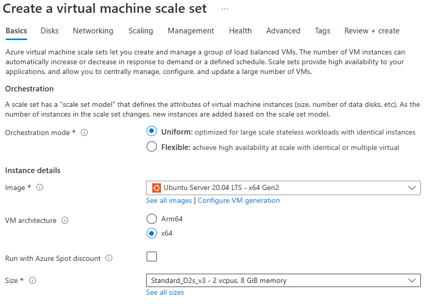

You can implement Azure Virtual Machine Scale Sets in the Azure portal. You specify the number of virtual machines and their sizes, and indicate preferences for using Azure Spot instances, Azure managed disks, and allocation policies.
In the Azure portal, there are several settings to configure to create an Azure Virtual Machine Scale Sets implementation.

-
Orchestration mode : Choose how the scale set manages the virtual machines. In flexible orchestration mode, you manually create and add a virtual machine of any configuration to the scale set. In uniform orchestration mode, you define a virtual machine model and Azure generates identical instances based on that model.
-
Image : Choose the base operating system or application for the VM.
-
VM Architecture : Azure provides a choice of x64 or Arm64-based virtual machines to run your applications. x64-based VMs provide the most software compatibility. Arm64-based VMs provide up to 50% better price-performance than comparable x64 VMs.
-
Size : Select a VM size to support the workload that you want to run. The size that you choose then determines factors such as processing power, memory, and storage capacity. Azure offers a wide variety of sizes to support many types of uses. Azure charges an hourly price based on the VM's size and operating system.
Under the Advanced tab, you can also select the following:
- Spreading algorithm : The spreading algorithm determines how VMs in the scale set are balanced across fault domains. With max spreading, VMs are spread across as many fault domains as possible in each zone. With fixed spreading, VMs are always spread across exactly five fault domains. In the case where fewer than five fault domains are available, a scale set using "Max spreading" completes, while a scale set using "Fixed spreading" fails. For this reason, Microsoft recommends using Max spreading for your implementation.